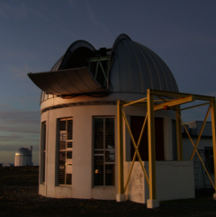

ASTRON, Dwingeloo, Netherlands
I frequently visit ASTRON
Charlottesville, Virginia, USA
I spent 2 weeks in November 2011, including Thanksgiving weekend, at NRAO, Charlottesville working with Huib Intema on the reduction of 150 MHz GMRT data covering 30 sq. degrees of the NOAO Bootes deep field.
Nagoya, Japan
In November 2010 I attended the "10 years with IRSF" conference held in Nagoya, Japan.

Parkes, Australia
I spent a week in February 2010 observing with the 64m Parkes Radio Telescope in Australia.
Pasadena, California, USA
I spent 6 weeks in September/October 2009 at IPAC/Caltech working on Spitzer data in the Zone of Avoidance.
Sutherland, South Africa
I have spent numerous weeks in 2009/2010 at Sutherland, South Africa doing near-infrared observations with the IRSF telescope.